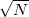

Here's a fairly efficient Python (2.5) and well-documented implementation of the Rabin-Miller primality test, based on section 33.8 in CLR's Introduction to Algorithms. Due to Python's built-in arbitrary precision arithmetic, this works for numbers of any size.
from random import randint
def _bits_of_n(n):
""" Return the list of the bits in the binary
representation of n, from LSB to MSB
"""
bits = []
while n:
bits.append(n % 2)
n /= 2
return bits
def _MR_composite_witness(a, n):
""" Witness functions for the Miller-Rabin
test. If 'a' can be used to prove that
'n' is composite, return True. If False
is returned, there's high (though < 1)
probability that 'n' is prime.
"""
rem = 1
# Computes a^(n-1) mod n, using modular
# exponentation by repeative squaring.
#
for b in reversed(_bits_of_n(n - 1)):
x = rem
rem = (rem * rem) % n
if rem == 1 and x != 1 and x != n - 1:
return True
if b == 1:
rem = (rem * a) % n
if rem != 1:
return True
return False
def isprime_MR(n, trials=6):
""" Determine whether n is prime using the
probabilistic Miller-Rabin test. Follows
the procedure described in section 33.8
in CLR's Introduction to Algorithms
trials:
The amount of trials of the test.
A larger amount of trials increases
the chances of a correct answer.
6 is safe enough for all practical
purposes.
"""
if n < 2:
return False
for ntrial in xrange(trials):
if _MR_composite_witness(randint(1, n - 1), n):
return False
return True
The function you should call is isprime_MR.
Although this test is probabilistic, the chances of it erring are extremely low. According to Bruce Schneier in "Applied Cryptography", the chances of error for a 256-bit number with 6 trials are less than one in  - this is very low.
- this is very low.
Therefore, you should always use this method instead of the naive one (trying do divide by all primes up to ), because it's much faster.